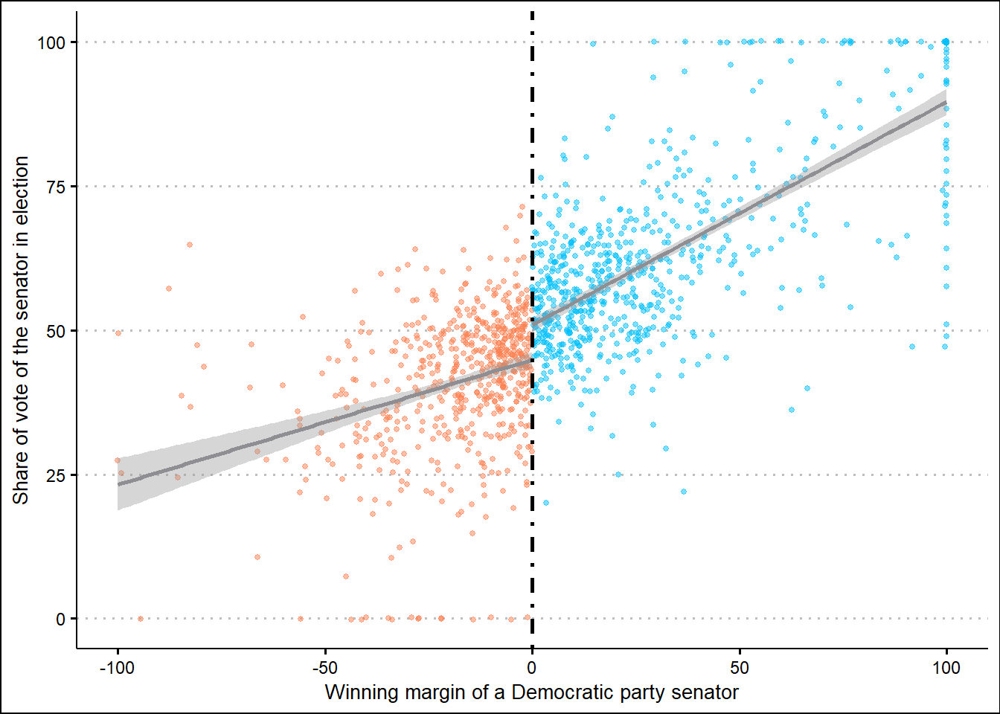
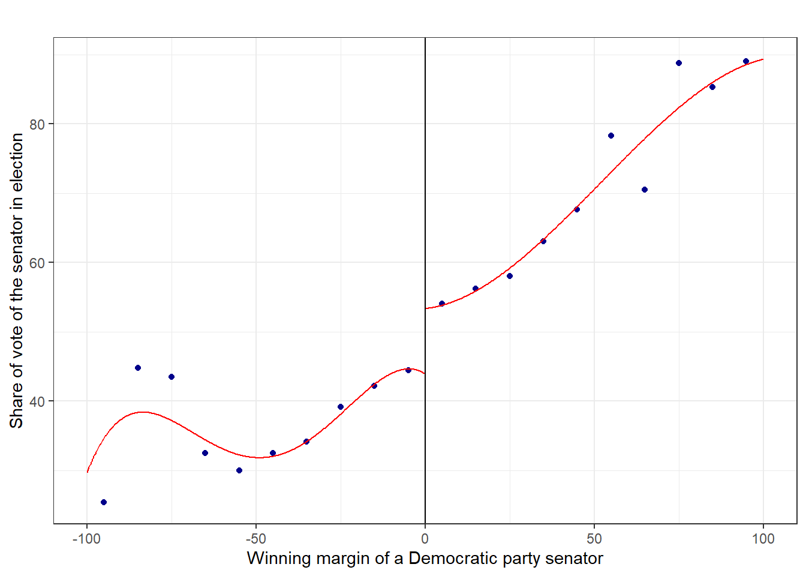
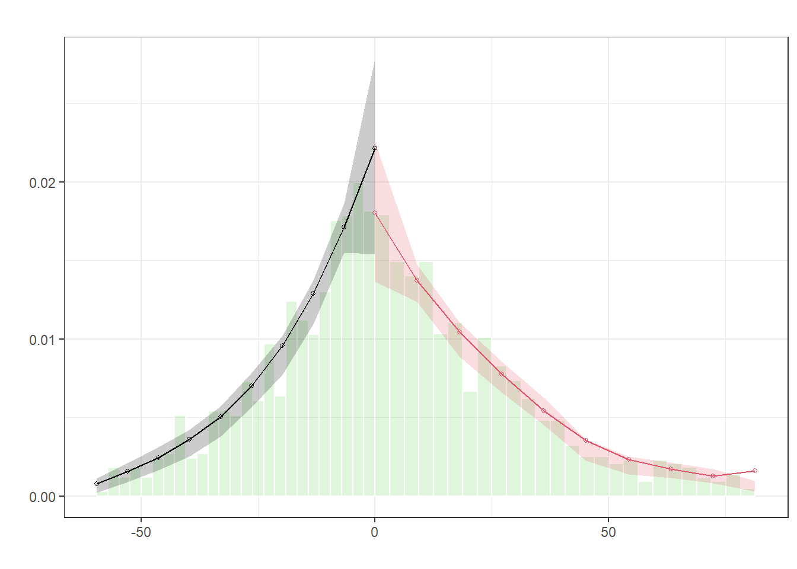

fixed_effect_plm<-fatality%>%pdata.frame(index =c("state"))%>%plm(fatality_rate~beertax, data =., model ="within", effect ="individual")fixed_clustered_plm<-fixed_effect_plm%>%tidy()%>%mutate(category ="fixed effects with plm", std.error =vcovHC(fixed_effect_plm, type ="HC1", cluster ="group")|>diag()|>sqrt(), statistic =coef(fixed_effect_plm)/std.error, p.value =2*pt(abs(statistic), df =fixed_effect_plm$df.residual, lower.tail =FALSE))fixed_clustered_lfe<-fatality%>%felm(fatality_rate~beertax|state, cluster ="state", data =.)%>%tidy()%>%mutate(category ="fixed effects with lfe")fixed_clustered_lfe%>%bind_rows(fixed_clustered_plm)%>%print_kable(title ="Fixed effect in standard packages")
Fixed effect in standard packages
term
estimate
std.error
statistic
p.value
category
beertax
-0.656
0.292
-2.247
0.029
fixed effects with lfe
beertax
-0.656
0.289
-2.271
0.024
fixed effects with plm
DiD
Pre-trends
Based on the figure, the parallel trend assumption may not hold, as we can see that the crime rates in Muslim/Jewish neighborhoods experienced two episodes of first decreasing, then increasing again, before increasing prior to the intervention. However, the Non Muslim/Jewish only experienced one episodes.
did_interaction<-cartheft%>%lm(cartheft~treatment+postattack+treatment*postattack, data =.)%>%tidy()%>%slice(4)%>%mutate(term ="Same-Block Police")did_interaction%>%print_kable(., title ="linear regression with interaction")
linear regression with interaction
term
estimate
std.error
statistic
p.value
Same-Block Police
-0.078
0.027
-2.847
0.004
DiD asd fixed effect
Code
did_fixed<-cartheft%>%felm(cartheft~treatment*postattack|blockid+month, data =.)%>%tidy()%>%slice(3)%>%mutate(term ="Same-Block * Postattack")did_fixed%>%print_kable(title ="Two way fixed effect model")
Two way fixed effect model
term
estimate
std.error
statistic
p.value
Same-Block * Postattack
-0.078
0.026
-2.992
0.003
Time-invariant variables in fixed effect regressions
We cannot estimate the coefficient for time-invariant variables since they are absorbed by the individual fixed effects.
Code
did_fixed_invariant<-cartheft%>%felm(cartheft~treatment*postattack+bank|blockid+month, data =.)%>%tidy()%>%slice(3:4)%>%mutate(term =c("Bank", "Same-Block * Postattack"))did_fixed_invariant%>%print_kable(title ="Time-invariant variables in regression")
The IV estimator is larger than the OLS estimator. Since in this study, IV is used to address endogeneity by providing a source of variation in the predictor variable that is independent of the error term. In that case, IV estimate accounts for endogeneity and provides a more reliable estimate of the true causal effect of the predictor variable on the outcome variable. The OLS estimate, on the other hand, may be biased and inconsistent in the presence of endogeneity, leading to an underestimate of the true effect size.
card<-import("E:/OneDrive - HKUST Connect/assignment/assignment3/card.csv", setclass ="tibble")ols<-card%>%lm(lwage~educ, data =.)%>%coeftest(vcovHC, "HC1")%>%tidy()%>%slice(2)%>%mutate(method ="OLS with robust std.error")iv<-card%>%ivreg(lwage~educ|nearc4, data =.)%>%coeftest(vcovHC, "HC1")%>%tidy()%>%slice(2)%>%mutate(method ="IV with robust std.error")bind_rows(ols, iv)%>%print_kable(title ="Comparison between OLS and IV")
Comparison between OLS and IV
term
estimate
std.error
statistic
p.value
method
educ
0.052
0.003
17.902
0
OLS with robust std.error
educ
0.188
0.026
7.189
0
IV with robust std.error
Manual 2SLS
Code
first_stage<-card%>%lm(educ~nearc4, data =.)manual<-card%>%mutate(educ =predict(first_stage))%>%lm(lwage~educ, data =.)%>%coeftest(vcovHC, "HC1")%>%tidy()%>%slice(2)%>%mutate(method ="Manual 2SLS with robust std.error")bind_rows(manual, iv, ols)%>%print_kable(title ="Comparison between OLS, IV and manual 2SLS")
Comparison between OLS, IV and manual 2SLS
term
estimate
std.error
statistic
p.value
method
educ
0.188
0.021
9.149
0
Manual 2SLS with robust std.error
educ
0.188
0.026
7.189
0
IV with robust std.error
educ
0.052
0.003
17.902
0
OLS with robust std.error
Weak instrument
The F statistics from the first-stage regression is larger than 10.
Compliers are the individuals whose decision to attend college is influenced by the instrumental variable. In this study, compliers are the students who would attend college if they lived close to one and would not attend college if they lived far away. These students’ decisions are directly impacted by the geographical distance to college.
Always-takers are the individuals who would attend college regardless of the geographical distance. These students would pursue higher education even if they lived far away from a college.
Sharp RD
RD plot
We can observe a clear difference around the cutoff.
Code
senate<-import("E:/OneDrive - HKUST Connect/assignment/assignment3/senate.csv", setclass ="tibble")%>%mutate(cutoff =if_else(margin>0, 1, 0))senate%>%ggplot(aes(x =margin, y =vote, color =as.factor(cutoff)))+geom_point(size =1, alpha =0.5, position =position_jitter(width =0, height =0.25))+geom_smooth(data =filter(senate,margin>0), aes(x =margin, y =vote), method ="lm", color ="#8E8E93")+geom_smooth(data =filter(senate,margin<0), aes(x =margin, y =vote), method ="lm", color ="#8E8E93")+scale_color_manual(values =c("#FF7F50","#00BFFF"))+geom_vline(xintercept =0, linetype ="dotdash", linewidth =1)+theme_clean()+theme(legend.position ="none")+xlab("Winning margin of a Democratic party senator")+ylab("Share of vote of the senator in election")

Raw RD plot
Code
rdplot(y =senate$vote, x =senate$margin, nbins =10, x.label ="Winning margin of a Democratic party senator", y.label ="Share of vote of the senator in election", title ="")

Binned RD plot
Density Test
Code
density_plot<-rddensity(senate$margin, c =0)%>%rdplotdensity(rdd =., X =senate$margin, type ="both")%>%pluck("Estplot")

Density Test
RD bandwidth selection
The obtained bandwidth is 24.969. We estimate the RD effect using three different bandwidth values (ideal, twice the ideal, and half of the ideal) to determine if the value is appropriate. As we can see, the coefficients change substantially. It is considered a big bandwidth since it includes more observations in our analysis.
Code
rdbwselect(y =senate$vote, x =senate$margin, c =0, p =3, kernel ="triangular", bwselect ="mserd")%>%pluck("bws")%>%as_tibble()%>%set_names(c("BW est left", "BW est right", "BW bias left", "BW bias right"))%>%print_kable(title ="RD bandwidth selection")
RD bandwidth selection
BW est left
BW est right
BW bias left
BW bias right
24.969
24.969
37.221
37.221
Code
rd_models<-c(24.969, 24.969*2, 24.969/2)%>%map(~rdrobust(y =senate$vote, x =senate$margin, p =3, h =.))extract_se_es<- \(x){tibble(Estimate =pluck(x, "Estimate")[1], Se =pluck(x, "se")[1], `P-Value` =pluck(x,"pv")[1])}rd_models%>%map_dfr(extract_se_es)%>%mutate(Bandwidth =c("24.969 (ideal)", "49.938 (twice)", "12.485 (half)"), .before =1)%>%print_kable(title ="Sensitivity analysis using different bandwidths")
Sensitivity analysis using different bandwidths
Bandwidth
Estimate
Se
P-Value
24.969 (ideal)
9.126
2.314
0
49.938 (twice)
7.676
1.781
0
12.485 (half)
13.872
3.126
0
Estimate Sharp RD treatment effect
The model result shows that there is an incumbency advantage.
Code
sharp_rd<-rdrobust(y =senate$vote, x =senate$margin, h =24.96899, p =3)tibble(Estimate =pluck(sharp_rd, "Estimate")[1], Se =pluck(sharp_rd, "se")[1], `P-Value` =pluck(sharp_rd, "pv")[1])%>%print_kable(title ="Sharp RD treatment effect")
Sharp RD treatment effect
Estimate
Se
P-Value
9.126
2.314
0
Varying orders of polynomial regression
Models with different bandwidth all support the same conclusion.
Code
c(1:4)%>%map(~rdrobust(y =senate$vote, x =senate$margin, p =., h =24.96899))%>%map_dfr(extract_se_es)%>%mutate(`Local-polynomial` =1:4, .before =1)%>%print_kable("Varying orders of polynomial regression")
![]()